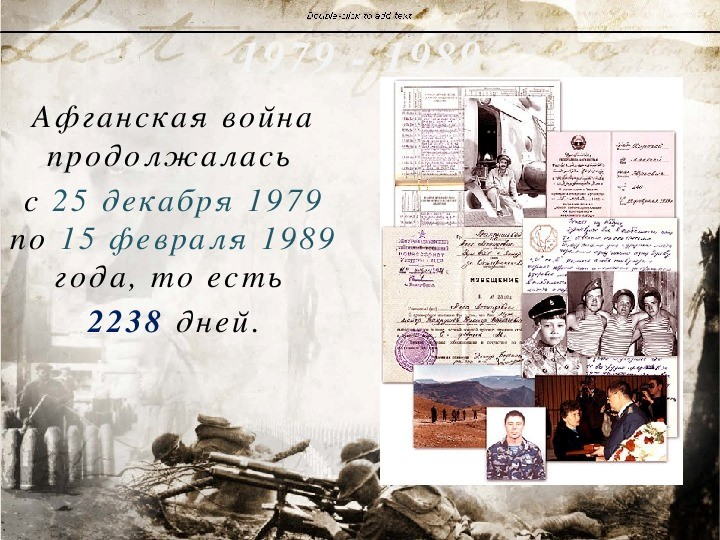
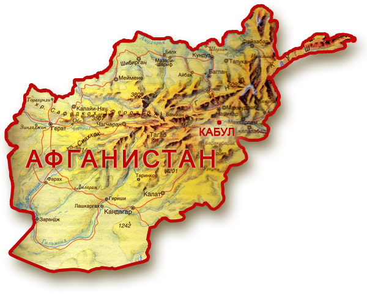
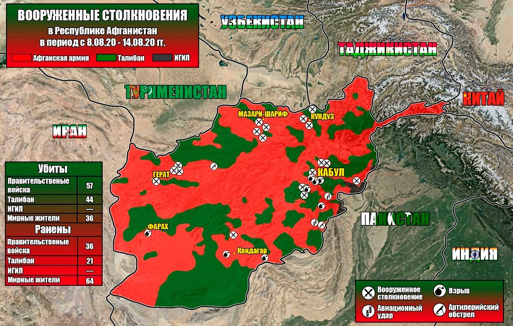
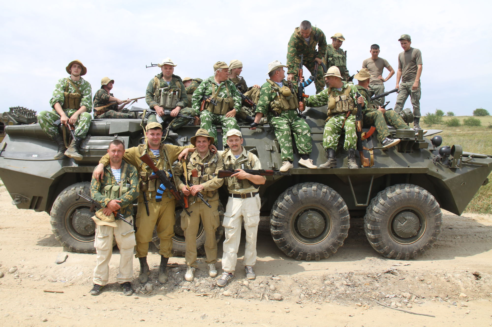
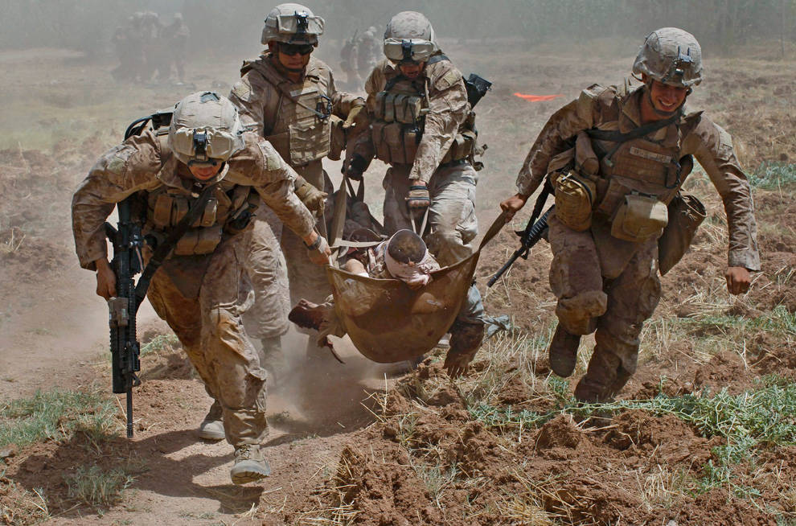
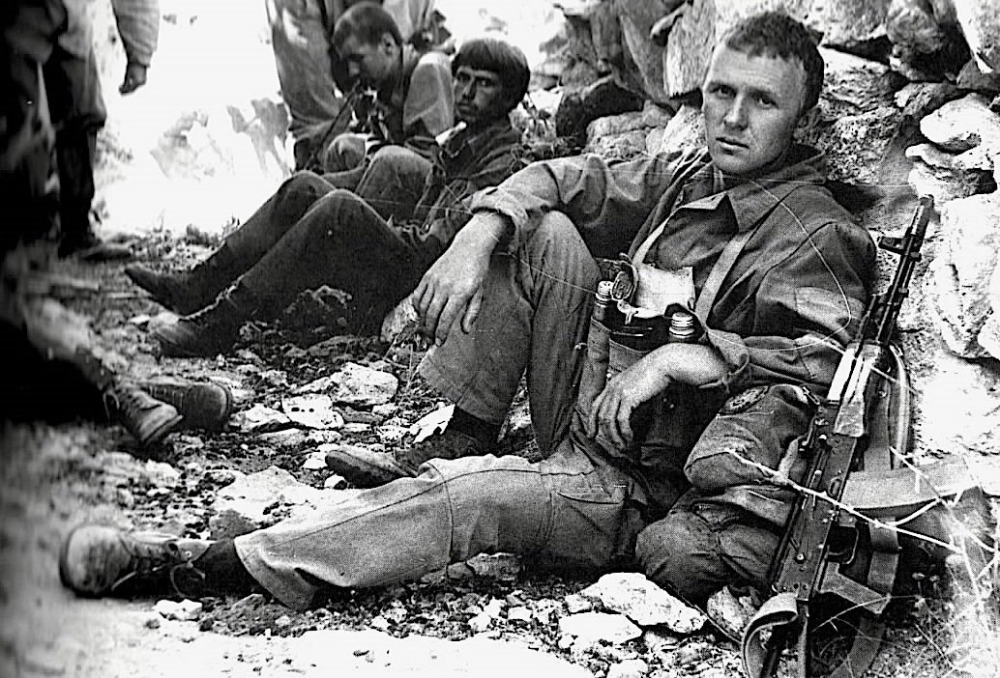
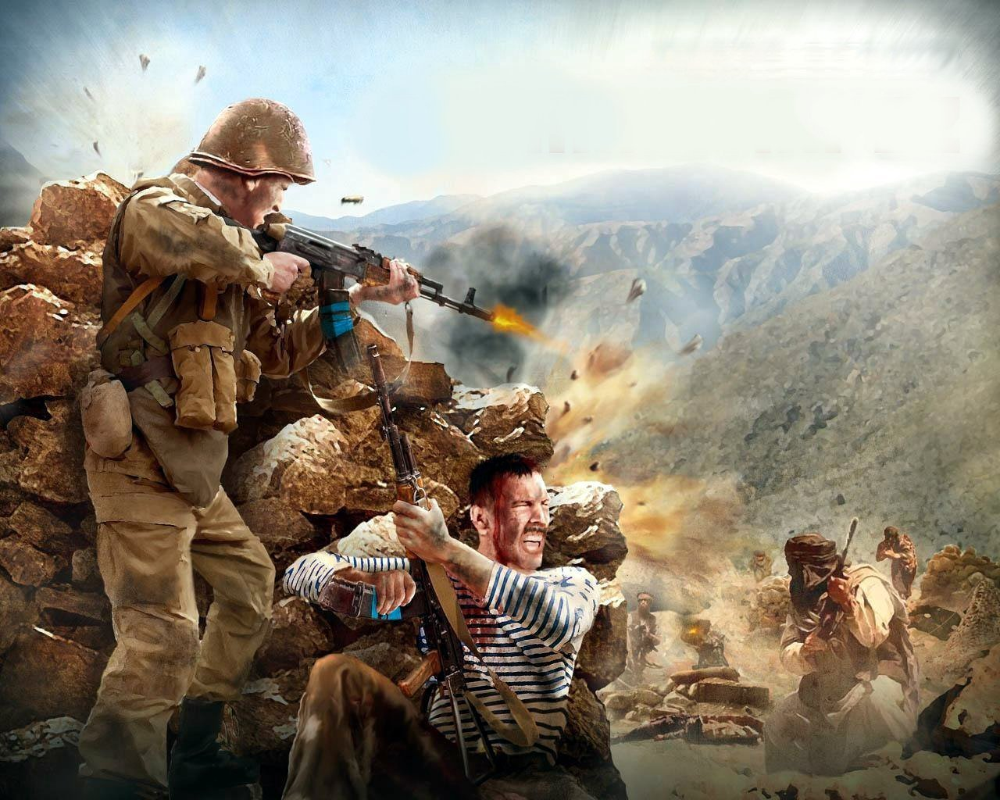
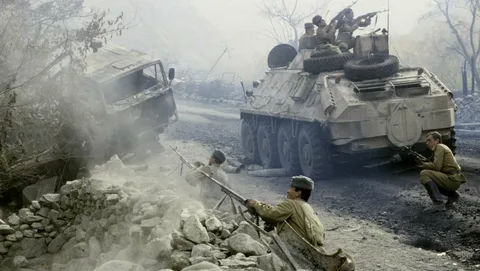
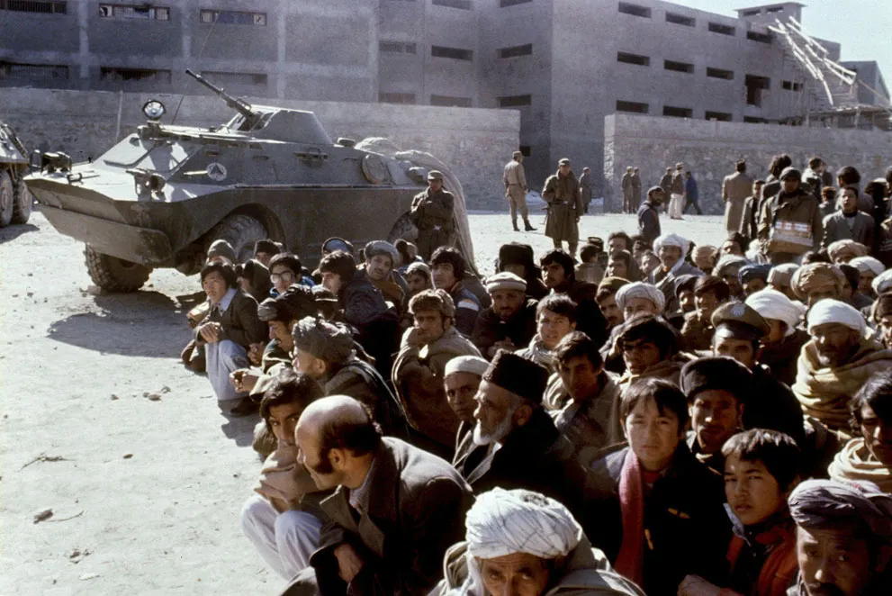
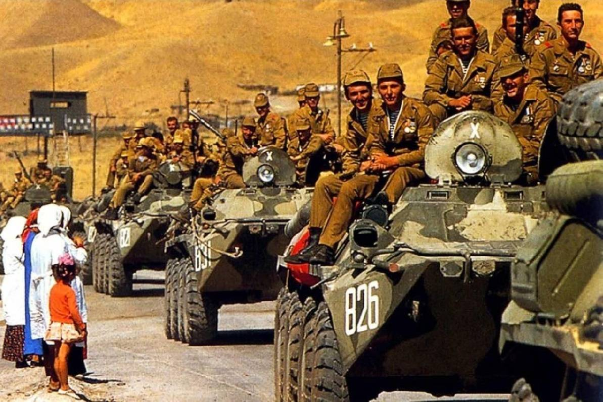

С апреля 1978 по март 1979 года было подписано 75 соглашений по вопросам экономической помощи ДРА, что сопровождалось прибытием в Афганистан 4500 советских советников.
Обострение обстановки в ДРА: вооруженные выступления против новой власти в центральных провинциях – Хазараджате, Нуристане.
14 ФЕВРАЛЯ
Членами маоистской группы «Национальный гнет» похищен и позднее 10 марта убит американский посол Адольф Даббс. Похитители требовали от правительства в обмен на посла освободить из тюрьмы троих своих сторонников.
Антиправительственный мятеж в г. Герате, который подготовил командир артиллерийского полка дивизии капитан Туран Исмаил. Во время мятежа погибло 2 советских гражданина, в том числе военный советник майор Н. Бизюков.
Первая просьба о вводе войск (всего таких просьб было около двадцати).
16 МАРТАМинистр обороны СССР Дмитрий Устинов приказал начальнику Генерального штаба подготовить одну из воздушно-десантных дивизий к возможному десантированию, а три авиаполка – к перебазированию.
17-19 МАРТАНа заседаниях Политбюро ЦК КПСС обсуждалась просьба о вводе войск в Афганистане.
18 МАРТАТелефонный разговор председателя Совета Министров А. Н. Косыгина с премьер-министром Афганистана.
Министр обороны Д. Устинов отдал распоряжение о дополнительном развертывании еще двух дивизий Туркестанском военном округе (ТуркВО), в апреле их вернули в пункты постоянной дислокации.
21 МАРТАРаскрыт заговор в Джелалабадском гарнизоне.
В ДРА прибыла советская военная делегация во главе с начальником Главного политуправления СА и ВМФ А. Епишевым.
В ТуркВО началось формирование «мусульманского батальона» ГРУ. Он комплектовался лицами коренных национальностей среднеазиатских республик.
В г. Баграм передислоцированы парашютно-десантные батальоны для охраны советских транспортных самолетов. В Афганистане начала работу спецгруппа КГБ «Зенит-1».
Мятеж в 26-м парашютно-десантном афганском полку и батальоне «Коммандос» (г. Кабул).
В г.Кабул прибыла спецгруппа КГБ «Зенит-2».
14 СЕНТЯБРЯОбострение фракционной борьбы в Народной демократической партии Афганистана (НДПА). По приказу афганского политического и партийного деятеля Хафизулла Амина был арестован, а затем убит премьер-министр Афганистана Нур Мухаммеда Тараки.
Официально о смерти «по болезни» было сообщено только 10 октября. К этому времени количество казненных новой властью достигло 50 тысяч человек.
Оппозиция довела численность своих вооруженных формирований до 40 тысяч человек и развернула боевые действия против нового правительства в 12 провинциях Афганистана.
3–14 ДЕКАБРЯ2 парашютно-десантных батальона 345-го отдельного парашютно-десантного полка и «мусульманский батальон» ГРУ переброшены на авиабазу г. Баграма.
8 ДЕКАБРЯНа совещании у Л. Брежнева Ю. Андропов, А. Громыко и М. Суслов обсудили положение в Афганистане. Решили в предварительном плане проработать два варианта: силами спецслужб устранить Х. Амина и поставить на его место Бабрака Кармаля.
10 ДЕКАБРЯПринято предварительное решение на временный ввод войск в ДРА. Дано устное распоряжение по формированию новой общевойсковой армии в ТуркВО.
12 ДЕКАБРЯНа заседании Политбюро принято решение ввести советские войска на территорию Демократической Республики Афганистан.
14 ДЕКАБРЯ
В Кабул прибыла спецгруппа КГБ СССР «Гром», усилившая группу «Зенит-2». В 22:00 оперативная группа МО СССР прибыла в г. Термез.
17 ДЕКАБРЯ«Мусульманский батальон» выдвинулся из г. Баграма и сосредоточился в районе резиденции Хафизулла Амина – дворца Тадж-Бек (г. Кабул).
24 ДЕКАБРЯНа совещании руководящего состава Минобороны СССР было объявлено о принятии советским руководством решения о вводе войск в Афганистан. К этому времени основные силы развернутой 40-й армии уже были готовы к выполнению задач. Директивой министра обороны войскам были поставлены задачи на совершение марша и размещения на территории Афганистана. Было определено точное время перехода границы – 25 декабря 1979 года в 15:00.
25 ДЕКАБРЯВ установленное время начался ввод советских войск. Первыми переправились разведчики и десантно-штурмовой батальона капитана Л. Хабарова, им предстояло занять перевал Саланг. Затем по понтонному мосту под руководством генерал-майора К. Кузьмина пошли остальные части 108-й мотострелковой дивизии. Одновременно самолетами военно-транспортной авиации началась переброска по воздуху и высадка частей 103-й дивизии, остатков 345-го отдельного парашютно-десантного полка на аэродромы г. Кабула и г. Баграма.
27 ДЕКАБРЯВоздушно-десантные части и подразделения 103-й дивизии, а также выделенные им в помощь силы от КГБ, вышли к административным объектам в столице Афганистана, «усилив» их охрану, установив над ними свой контроль. Первой боевой акцией стала операция "Шторм-333", успешно осуществленная спецназом КГБ СССР и войсковыми подразделениями армейского спецназа, целью которой был захват дворца Тадж-Бек (резиденции главы ДРА) и отстранение от власти Х. Амина.
Пленум ЦК НДПА объявил состав руководства Республики. Главой правительства, генеральным секретарем ЦК НДПА и председателем Революционного Совета стал Бабрак Кармаль. Утверждено наименование советских войск в Афганистане – «Ограниченный контингент советских войск в Афганистане (ОКСВ)».
Части советских войск заняли ключевые районы страны, взяв под охрану 21 провинциальный центр, объекты советско-афганского сотрудничества, 9 аэродромов.
5 ЯНВАРЯ Первые пропавшие без вести советские военнослужащие (провинция Баглан): подполковник Ю. А. Журавлев, младший лейтенант
Первые пропавшие без вести советские военнослужащие (провинция Баглан): подполковник Ю. А. Журавлев, младший лейтенант
Г. А. Кашлаков.
Первая боевая операция подразделения ОКСВ (не считая штурма дворца Амина). В населенном пункте Нахрин восстал 4-й артиллерийский полк Вооруженных Сил ДРА. Боевая операция по разоружению мятежного полка проводилась в течение двух дней силами частей и подразделений 186-го мотострелкового полка. Потери с нашей стороны составили: 2 человека убито, 2 ранено, 1 БМП (сорвалась в обрыв на перевале).
14 ЯНВАРЯБольшинство стран-участниц Генеральной Ассамблеи ООН осудило действия СССР и потребовало вывести войска.
На окраине Кабула душманы в упор расстреляли патрульную машину. Погибло 12 советских военнослужащих.
19 ФЕВРАЛЯПостановление Совета Министров СССР № 152-45, которое определяло вопросы финансирования и предоставления льгот личному составу войск, находящихся в ДРА. Началась замена всех военнообязанных, призванных из запаса, кадровыми офицерами, военнослужащими срочной службы.
20 ФЕВРАЛЯВ Кабуле вспыхнуло восстание населения, все гарнизоны в городе и окрестностях блокированы, возводятся баррикады. Обстреляно посольство СССР, погибло несколько советских граждан. Советское командование получило из Москвы указание: «...начать совместно с армией ДРА активные действия по разгрому отрядов вооруженной оппозиции...»
23 ФЕВРАЛЯТрагедия в тоннеле Саланг: выхлопными газами отравилось и погибло 16 военнослужащих (в ходе вывода в Союз зенитной ракетной бригады).
КОНЕЦ ФЕВРАЛЯСоветским руководством стал прорабатываться вопрос о выводе войск из Афганистана. Против вывода войск выступили Д. Устинов, Ю. Андропов и ОКСВ был оставлен в Афганистане.
ФЕВРАЛЯ-МАРТКрупная операция Советской Армии и двух афганских батальонов против моджахедов в провинции Кунар (под руководством генерал-лейтенанта В. А. Меримского).
Против мятежников проведено 96 операций, в т. ч. 54 – совместными усилиями советских и афганских частей.
Конгресс США проголосовал за выделение прямой и открытой помощи мятежникам, официально узаконив вмешательство в конфликт в Афганистане. Проведена пресс-конференция руководителей шести оппозиционных афганских организаций, объявивших своей задачей «освобождение Афганистана» от существующей власти и «создание исламского государства».
Боевые действия ведутся в 15 провинциях.
23 ИЮНЯПленум ЦК КПСС единодушно одобрил решение Политбюро о вводе советских войск в Афганистан. Определена цель военного присутствия – оказание помощи в стабилизации обстановки и отражение возможной агрессии извне.
Политбюро ЦК КПСС было принято решение создать мощную Оперативную группу под руководством Главного военного советника, первого заместителя главнокомандующего Сухопутными войсками генерала армии А. Майорова.

В его обязанности входило совместно со штабом ТуркВО планирование, организация и ведение боевых действий советскими войсками, а также координация действий афганской армии.
2-я Панджшерская операция. Боевые действия в провинциях Каписа, Кабул, Логар, Вардак, в горном массиве Луркох (г. Фарах). Первая крупная операция – «Удар». За год погибло 1484 военнослужащих ОКСВ, в т. ч. боевые потери – 1229 человек.
В ДРА вступил в силу закон о всеобщей воинской повинности и снижении призывного возраста до 19 лет. Повсеместно устанавливается нетрадиционная для страны «народная» власть – силовыми методами организуются отряды партийных активистов и защитников революции.
Заметное обострение обстановки, дезертирство из армии ДРА приняло массовый характер. В борьбу против новой власти и советских войск включилась часть населения, которая ранее занимала выжидательные позиции.
Направлена докладная записка министру обороны СССР Д. Устинову о том, что руководство ДРА во главе с Б. Кармалем не в силах стабилизировать общественную обстановку в стране. Одновременно Б. Кармаль стремится как можно больше использовать помощь советских войск.
Состоялся визит Б. Кармаля в Москву, было подписано Соглашение о взаимовыгодных отношениях и безвозмездной помощи Афганистану со стороны СССР. 40-я армия проводит в этом году крупномасштабные операции, ведет боевые действия в «зонах ответственности частей и соединений». Бои идут на всей территории ДРА, особо необходимо отметить: 3-я Панджшерская операция в апреле; в июне – разгром базы моджахедов в ущелье Тура-Бура (провинция Нангархар); сентябрь – операция «Мармоль» (провинция Балх); Четвертая Панджшерская операция; октябрь – Ургунская операция.
Сентябрь–декабрь
Проведено 46 операций против моджахедов. Для охраны проблемных зон, коммуникаций, проводки колонн организовано более 600 сторожевых засад и постов, в них было задействовано более 20 тысяч человек. Продолжаются оперативно-войсковые боевые операции по ликвидации контрреволюционного подполья в городах Кабул, Кандагар, Герат, Джелалабад и Хост. Самостоятельные боевые действия афганских войск проводились редко (только при выполнении локальных задач).
Первая крупная совместная операция афганских и советских войск по разгрому баз моджахедов в провинции Джаузджан.
Прошла операция по разгрому вооруженной оппозиции в зеленой зоне Чарикар, Джабаль-Уссарадж, Махмудраки. Группировок противника в этом районе насчитывала около 4,5 тыс. человек. Моджахеды постоянно обстреливали аэродром Баграм, где базировалась советская авиация, грабили автоколонны, совершали дерзкие диверсии против сторожевых застав и постов. Операция прошла успешно: выявлено и взято в плен 16 тыс. моджахедов.
Наиболее удачно проведена в Панджшере операция против отрядов мятежника Ахмат Шах Масуда. В ней были задействованы 36 батальонов, более 320 единиц бронетехники, 155 орудий и минометов, 104 вертолета, 26 самолетов. Пытаясь избежать полного разгрома группировки, Ахмад Шах Масуд согласился с предложением советского командования заключить договор о перемирии в Панджшере до 21 апреля 1984 года. В начале июня советские войска, выполнив боевую задачу, начали выход в пункты постоянной дислокации. Проведены боевые операции в провинциях Парван, Газни и Каписа, а также мероприятия по укреплению государственной границы Афганистана с Пакистаном и Ираном.
3 НОЯБРЯ Трагедия на Саланге: в результате возникшей вне тоннеля пробки в тоннеле погибло более 50-ти человек военнослужащих и неизвестное число гражданских лиц-афганцев.
2 ЯНВАРЯ
Похищены моджахедами 16 советских гражданских специалистов, нашим десантникам удалось освободить их через месяц (шесть специалистов погибли).
Ю. Андропов предпринимает дипломатические шаги для вывода ОКСВ из ДРА.
Разгром отрядов оппозиции в ущелье Ниджарат (провинция Каписа).
19 МАЯ
В Пакистане советский посол подтвердил стремление СССР и Афганистана «назначить сроки вывода контингента советских войск, однако Пакистан и США тормозили принятие конструктивных решений путем переговоров.
2 ИЮНЯ
Директивы командующего войсками ТурВО № 15/085 «О мерах по повышению качества ввода в строй офицеров, прибывающих по замене в войска 40-й армии» и № 15/091 требовали проводить расстановку личного состава только по специальностям, комплектовать войсковые подразделения военнослужащими разного года призыва, разных специальностей и т.д.
В провинции Лагман шли ожесточенные боевые действия. На протяжении всего года продолжались бои в районах городов Кундуз, Пули-Хумри, Кабул, Герат, Шинданд, Кандагар. Нарастает сопротивление афганским правительственным и советским войскам.
В отрядах моджахедов в этом году насчитывалось до 40 тысяч человек. На период с 1983 по 1986 год приходится пик военных действий и самые большие потери наших воинов .
Разработан и утвержден командующим 40-й армией план под кодовым названием «Завеса», по которому предполагалось перекрыть караванные маршруты, лишая тем самым моджахедов постоянных источников поступления вооружения и боеприпасов.
В долине реки Панджшер проведена третья по счету крупномасштабная операция с целью нанесения поражения формированиям А. Масуда. В боевых действиях участвовало более 11 тысяч советских и 2,6 тысяч афганских военнослужащих. Достичь внезапности при проведении операции не удалось, так как в результате утечки информации А. Масуд уже за 15 дней до начала боевых действий имел исчерпывающие данные о планах советских войск.
40-я армия провела 22 плановые и 19 неплановых операций. За этот период было выставлено 2084 засады, уничтожено 18184 мятежника, захвачено 3839 единиц стрелкового оружия, проведено более 80 обстрелов колонн, 96 обстрелов пунктов дислокации, 53 подрыва на минах. Наши войска потеряли 886 человек.
В результате операции в районе Искаполь разгромлена крупная группировка мятежников.
31 АВГУСТА
Душманами совершен налет на Кабульский аэродром.
Силами 5-й мотострелковой дивизии под общим руководством заместителя командира дивизии полковника В. Кононыхина проведена операция по разгрому базовых районов моджахедов в горах Катарун, ущелье Рутула.
Операция проводилась по традиционному сценарию. В качестве штурмового отряда действовал усиленный 3-й мотострелковый батальон 371-го полка во главе с начальником штаба капитаном А. Истоминым. Подавив моджахедов при поддержке бронетехники, штурмовой отряд ворвался в ущелье и с минимальными потерями выполнил задачу. Было захвачено две машины с боеприпасами и оружием.
Спустя два месяца частями этой же дивизии была проведена операция по разгрому боевых районов мятежников в горах Лоркох (провинция Фарах), расположенных в трех ущельях.
В горах провинции Фарах разгромлена база моджахедов. В этом году продолжались повсеместные партизанские действия моджахедов, укреплялась централизованная система управления ими, концентрация их группировок в центре страны, а также в Панджшерской и Андорабской долинах, наблюдалось появление новых видов вооружения, умелое использование религиозных, националистических чувств населения.
40-я армия продолжает оставаться основным стабилизирующим положение в ДРА фактором, несет невосполнимые потери.
В течение года советские и афганские войска провели против мятежников более 80 успешных операций. Формированиям оппозиции был нанесен значительный урон, что привело к снижению их боеспособности, а в ряде случаев к полной деморализации. Моджахеды лишились крупных базовых районов с большими запасами оружия, боеприпасов, продовольствия, медикаментов, среди них Агарсай, Байрамшах (г. Балх), Хукумати-Духанай-Гори (г. Баглан), Исламдара (г. Кандагар), Камдакка (г. Нангархар), Пастаканца (г. Хост). Командующим 40-й армии назначен генерал-лейтенант И. Н. Родионов.
Увеличение количества батальонов специального назначения, которые размешают вдоль афгано-пакистанской границы на тревожных направлениях. Организационно свели их в две бригады, штабы которой располагались в городах Джелалабад и Лашкаргах.
21 АПРЕЛЯ
В Мараварском ущелье (провинция Кунар) попала в засаду моджахедов и почти полностью была уничтожена группа спецназа дежелалабадской бригады. Погибло 34 человека, спаслись единицы.
26 АПРЕЛЯ
Группа советских и афганских военнопленных в количестве 24 человек, содержавшихся в течение трех лет в специальной тюрьме Исламского общества Афганистана при центре подготовки мятежников в кишлаке Бадабер, совершила вооруженное выступление с целью освободиться из плена.
После непродолжительных переговоров с восставшими лидер Исламского общества Афганистана (ИОА) Б. Раббани, по согласованию с пакистанскими войсками, отдал приказ о штурме тюрьмы. Против обороняющихся были применены артиллерия, танки и боевые вертолеты. Сопротивление восставших прекратилось к исходу 27 апреля в результате взрыва боеприпасов, находивших на складе. В ходе штурма тюрьмы погибли все военнопленные, а также более ста афганских мятежников и военнослужащих армии Пакистана.
После восстания в Бадабере лидер Исламской партии Афганистана (ИПА) Г. Хекматьяр издал приказ: «В плен русских впредь не брать, а уничтожать на месте захвата».
Создано контрреволюционное объединение «Альянс-7», провозгласившее своей целью непримиримую борьбу с государственной властью ДРА и создание «истинно исламского государства».
На протяжении 170 км. Кунарского ущелья проведены крупные боевые действия против оппозиционных формирований.
13 ИЮЛЯ
Началась крупная Хостинская боевая операция, длившаяся 48 дней. Уничтожено около 2400 моджахедов.
Командованию 40-й армии стало известно, что в Иране завершается подготовка укомплектованного хазарейцами батальона, который планируется направить в провинцию Гур.
Этот батальон должен обеспечить создание во внутренних районах Афганистана Хазарейской автономной республики. Была поставлена задача воспрепятствовать проникновению хазарейского батальона на афганскую территорию.
Колонну противника обнаружили с воздуха. Примерно через пять-шесть часов после обнаружения колонны ущелье было окружено, а также нанесены авиационные и огневые удары. Мотострелки и разведчики довершили разгром колонны.
В Москве состоялись переговоры с правительством Афганистана, на которых кабульским властям сообщалось о твердом намерении СССР вывести свои войска из страны.
Под руководством командующего 40-й армией генерал-лейтенанта И. Родионова успешно проведена операция по разгрому отрядов оппозиции, их складов и баз в провинциях Баглан, Каписа, Парван.
Уничтожение противника осуществлялось последовательно в 14 районах, примыкавших к магистрали Кабул – Хайратон.
20 НОЯБРЯ
На пленуме ЦК НДПА принято решение поделиться властью с другими политическими силами (решение не было воплощено в жизнь) и утверждены 10 принципов национального примирения.
Декабрь
В провинции Саманган была вскрыта банда моджахедов численностью до 60 человек. После получения данных разведки командир 122-го мотострелкового полка направил в этот район дежурные силы. В течение двух часов банда была уничтожена.
Боевые действия советских и афганских войск лишили противника крупных баз с оружием, продовольствием и медикаментами: Агарсай и Балх, Хукумати-Духанай-Гори (г. Баглан), Исламдара (г. Кандагар), Камдакка (г. Нангархар), Пастаканца (г. Хост) и др.
За текущий год были проведены боевые действия: в Бадахшане против группировки А. Басира (февраль), в Нангархаре по разгрому перевалочной базы Марульгад (февраль), в Пактии в районе Шекуле (март), в Бадахшане против группировки Вадуда (март), в Заболе в районе ушелья Апушела (март), в Нангархаре по разгрому формирования Зияратгуля (апрель), в Бадахшане против группировки Наджимуддина в ущелье Вардудж (апрель), в Баглан( против формирования С. Мансура в уезде Вальян (апрель), в Пактии против формирований ИПА в уезде Даджи, центр Алихейль (май), в Парван (в ущелье Пандж-Спинбульдак по ликвидации перевалочной базы Шиннарай (июнь), в Герате по ликвидации группировки моджахедов в зеленой зоне города и на перевалочной базе Кокари-Шушари (июнь–август) в Лагмане (июнь).
На XXVII съезде КПСС было сообщено делегатам о плане поэтапного вывода советских войск и о том, что он будет приведен в исполнение сразу после достижения политического урегулирования. Советскому военному командованию поступило указание не ввязываться в боевые действия, перенести акцент на службу прикрытия, охрану коммуникаций, оборону важных стратегических пунктов.
Проведена войсковая операция по разгрому крупной перевалочной базы моджахедов Джавары («Волчья яма»). Военное командование ОКСВ принимало меры, чтобы заставить афганцев самих воевать с оппозиционными формированиями. Но афганцы воевать отказались и первая попытка овладеть Джаварой провалилась. Успех был достигнут лишь после введения в бой советских частей и соединений.
США подписали Директиву № 166 с призывом отбросить советские войска из Афганистана любыми средствами. Командующим 40-й армией назначен генерал-лейтенант В. П. Дубынин.
Пленум ЦК НДПА избрал генеральным секретарем ЦК НДПА Мухаммеда Наджибуллу (Наджиба), заменив им Бабрака Кармаля. Перед Наджибуллой поставлена задача – проводить «политику национального примирения».
Советские войска провели операцию в уезде Даджи, которая продолжалась десять дней. К 20 мая батальоны 345-го отдельного парашютно-десантного полка вышли к пакистанской границе, провели минирование караванных маршрутов на Парачинарском выступе, а 25 мая сосредоточились севернее Нарая.
По маршруту Гардез – Чакмани вблизи кишлака Арам моджахеды окружили часть советских войск. Батальон вышел из окружения, но 60 человек попали в плен.
13 НОЯБРЯ
Образована Комиссия Политбюро ЦК КПСС по Афганистану. Ее задачей являлось принятие решений, координация действий и урегулирование положения.
3 ДЕКАБРЯ
Чрезвычайным пленумом ЦК НДПА провозглашена принципиальная установка на национальное примирение и прекращение междоусобной войны.
Генеральный секретарь ЦК НДПА Наджибулла выступил с речью, в которой разъяснил основные принципы политики национального примирения (ПНП).
Важнейшим документом, регламентирующей проведение ПНП, была Декларация Ревсовета ДРА «О национальном примирении в Афганистане». После одностороннего прекращения правительственными войсками боевых действий существенного снижения подрывной деятельности оппозиции не произошло. Моджахеды усилили интенсивность акций против государственной власти, в особенности против советских войск.
Совещания лидеров оппозиции приняли решение не идти на компромиссы с правительством, насильственно свергнуть режим Наджибуллы, провозгласить Исламскую республику (без НДПА).
1 ЯНВАРЯ – 15 ИЮНЯ
Советские войска совместно с правительственными войсками ДРА провели крупные боевые действия: операция «Шквал» (провинция Кандагар); «Удар» в районе Мадраса (провинция Кундуз), «Гроза» (базовый район Пьядара в провинции Газни), «Круг» в провинции Кабул, Логар (район Джигдалай) в провинции Герат. «Весна» (базовые районы Кухи-Сафи и Чакарай) в провинции Кабул, «Залп» в првинциях Логар, Пактия, Кабул (Хисарак), Азра, районы Нарай, «Юг-87» (провинция Кандагар).
2 ЯНВАРЯ
В Кабул для работы на постоянной основе направлена ГО МО СССР, возглавляемая первым заместителем начальника Генштаба СССР генералом армии В. И. Варенниковым.
С весны 1987 года начали применять систему «Барьер»: оборонять основные узлы дорог и контролировали с высот ущелья. Главной задачей системы являлось не допустить перемещения караванов в центр страны. В результате вооружение, боеприпасы скапливались на перевалочных базах мятежников, затем уничтожались авиацией.
26 ФЕВРАЛЯ
Постановление ЦК КПСС и СМ СССР об оказании безвозмездной экономической помощи войскам, беженцам и беднякам.
8–9 МАРТА
Моджахеды обстреляли г. Пяндж (Таджикская ССР). Погранзастава СССР подверглась нападению афганских моджахедов.
Общепартийной конференцией НДПА была утверждена и подписана всеми делегатами резолюция «О неотложных задачах укрепления НДПА в условиях борьбы за национальное примирение».
29–30 НОЯБРЯ
Состоялся Высший Совет государства (Лойя Джирга), в результате которого Наджибулла избран на 7 лет Президентом Республики, из названия страны убрано слово «демократическая» и утвержден текст новой конституции. 1988
23 НОЯБРЯ 1987 – 10 ЯНВАРЯ 1988 ГОДА
Совместными силами ОКСВА и армии РА проведена воздушно-наземная боевая операция «Магистраль. Операция проводилась в провинциях Пактия и Хост, в зоне афгано-пакистанской границы (основные действия развернулись вдоль магистрали Гардез – Хост), на широком фронте, с привлечением значительных сил и средств. Одна из наиболее крупномасштабных плановых общевойсковых операций в Афганской войне 1979–1989 гг.
Главным итогом проведенной операции явился прорыв многомесячной военной и экономической блокады Хоста. Вместе с тем были сорваны планы лидеров «альянса семи» по отторжению округа Хост от Афганистана и созданию на его территории автономного исламского государства» и разгромлена крупная база моджахедов
.jpg) Решающий вклад в достижение успеха внесли десантники, захватившие перевал Сатукандав. После потери перевала моджахеды больше не оказывали серьезного сопротивления. Основную роль в разгроме базового района сыграл 345-й отдельный парашютно-десантный полк и 56-я гвардейская отдельная десантно-штурмовая бригада.
Решающий вклад в достижение успеха внесли десантники, захватившие перевал Сатукандав. После потери перевала моджахеды больше не оказывали серьезного сопротивления. Основную роль в разгроме базового района сыграл 345-й отдельный парашютно-десантный полк и 56-я гвардейская отдельная десантно-штурмовая бригада.
14 АПРЕЛЯ
В Женеве при посредничестве ООН министрами иностранных дел Афганистана и Пакистана был подписан пакет документов, призванных положить конец кровопролитию в РА. Гарантами выполнения соглашений выступили США и СССР. В соответствии с этими договоренностями СССР взял на себя обязательства вывести свои войска из Афганистана в девятимесячный срок - начиная с 15 мая 1988 года.
15 МАЯ – 15 АВГУСТА
Выведены войска из 12 провинций (первыми возвращались части джелалабадского гарнизона). На Родину вернулись тысячи человек личного состава (50% всей численности).
24 ИЮНЯ
Отряды оппозиции захватили центр провинции Вардак – г. Майданшехр. В сентябре 1988 года советские войска близ г. Майданшехра провели операцию по уничтожению базового района Хуркабуль.
Для поддержки национальной армии, на окраине Кабула недалеко от штаба 40-й армии, размещен советский ракетный дивизион Р-300 «Скад».
На 43-й сессии Генеральной ассамблеи ООН Советский Союз обратился к США и Пакистану с предложением заключить соглашение о прекращении с 1 января 1989 года боевых действий. Лидеры моджахедов отказались идти на переговоры и продолжили вооруженные действия.
Афганское руководство не раз обращалось к советскому правительству с просьбой: «Прекратить вывод войск в связи с тем, что Пакистан и США не выполняют Женевские соглашения». Ответы военного командования ОКСВ всегда были против этих предложений.

23–26 ЯНВАРЯ
В провинции Кундуз была проведена операция «Тайфун» – последняя операция советских войск в Афганистане.
4 ФЕВРАЛЯ
Последнее подразделение Советской Армии покинуло г. Кабул, оставались лишь небольшие силы для охраны кабульского аэродрома. Командование 40-й армии переместилось на командный пункт в г. Найбабад и оттуда управляло выводом войск.
15 ФЕВРАЛЯ
Из Афганистана полностью выведены советские войска. Выводом войск 40-й армии руководил последний командующий Ограниченным контингентом генерал-лейтенант Б. В. Громов, который, согласно официальной версии, последним перешёл пограничную реку Амударья (г. Термез).
Он заявил: «За моей спиной не осталось ни одного советского солдата». Это утверждение было ошибочным, поскольку в Афганистане оставались как советские военнослужащие, попавшие в плен к моджахедам, так и подразделения пограничников, прикрывавшие вывод войск и вышедшие на территорию СССР только во второй половине дня 15 февраля. Погранвойска КГБ СССР выполняли задачи по охране советско-афганской границы отдельными подразделениями на территории Афганистана до апреля 1989 года.
После вывода Советской Армии с территории Афганистана просоветский режим Наджибуллы (1986–1992) просуществовал еще 3 года и, лишившись поддержки России, был свергнут в апреле 1992 г. коалицией полевых командиров-моджахедов.
В годы войны в Афганистане появилась Аль-Каида и окрепли группы исламских радикалов, которые явились активными участниками конфликтов в Алжире, Египте и Чечне.